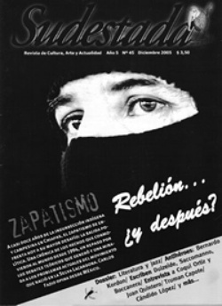

Buscar
Canciones que se quedan: nuevos referentes de la música popular argentina
A medida que pasa el tiempo, el universo musical argentino confronta con su propia historia, con su realidad latinoamericana, y de ella emergen voces sutiles, significativas, que desafían sin estruendo, con melodías sutiles, las formas vigentes de la canción folklórica. Sin saberlo, quizás, como un puente hacia el pasado, con cadencias que remontan vuelo. De esas voces van quedando obras, breves secuelas en viejos ritmos que estampan el aquí y ahora con belleza, hacia una nueva época. Esas porciones de silencio, como decía Yupanqui, son hoy las composiciones de dos artistas cristalinos: Juan Quintero y Coqui Ortiz. Con apenas 30 años, un tucumano y un chaqueño, construyen canciones sin impostaciones, artificios ni vagos regionalismos, y persiguen aquel universo que todos llevamos adentro y no lo sabemos, o apenas lo sabemos.
Edición N° 45
Diciembre 2005
Revista bimensual
Comprar edición impresaSumario
- Zapatismo: La rebelión del erizo
- ¿Seguimos? Seguimos
- Truman Capote: Sangre, sudor y lágrimas
- Guillermo Saccomanno: La espera de una ola
- Jazz y literatura: Alrededor de otras medianoches
- Bernardo Kordon: El escritor que murió dos veces
- ¡Degenerados asesinaron y mutilaron a vespertino!
- Canciones que se quedan: nuevos referentes de la música popular argentina
Compartir Articulo
¿Cuáles son los límites que los géneros musicales imponen, al momento de crear? ¿Son los patrones rítmicos y estéticos, los únicos obstáculos, las barreras a dejar atrás, para todo aquel que desee adentrarse en los espectros dormidos dentro de cada forma musical popular? Durante décadas, ensayar posibles respuestas posibilitó que dialogaran las obras y los lenguajes sonoros: el rechazo a todo operativo cómplice con la tradición mantuvo en pie a los artistas y les quitó horas de descanso: agazapados, en un momento creyeron que eran ellos los espectros, a la espera de la hora para pegar el salto.
Avanzaron las exploraciones, nuevos límites dejaron paso a nuevos desafíos, hasta que la música folklórica pareció detenerse, sin nada nuevo para decir, en una sucesión de frases hechas, reuniones festivas, arengas dramáticas.
En los últimos años, otra generación comenzó a desandar ese camino: jóvenes criados en una década de vaciamiento cultural e ideológico, que no se detuvieron en lamentos ni consignas: con un ojo en el pasado y otro en lo cotidiano, empezaron a escribir canciones, a rastrear aquellos espectros. Uno de estos autores es el tucumano Juan Quintero, quien hizo decir a sus precursores que "A pique" era el tema que hubieran deseado escribir. Ya sea con su voz y guitarra; como integrante del trío jazzístico Aca Seca; o en "El matecito de las siete", disco a dúo con Luna Monti; las composiciones de Juan Quintero logran, en menos de tres minutos, no parecerse a nada anterior, y a la vez, pertenecer al folklore de su provincia.
¿Qué desafíos te genera tocar a la vez como solista, trabajar con Luna Monti y con el grupo Aca Seca?
Las dificultades son el tiempo, que no alcanza, y el dinero. Pero después, los discos con Luna y con Aca Seca, han sido experiencias maravillosas. Con Luna sacamos un demo que iba a ser una muestra, pero como lo empezaron a comprar, -una edición súper casera, grabada en una tarde-, hemos hecho el segundo. Y tanto "El matecito de las siete", con Luna, como el disco con Aca, fueron experiencias que he disfrutado un montón, pero con mucho esfuerzo. Hasta ahora, no he encontrado escollos al trabajo con distintos grupos; se dan situaciones que te llenan, y sentís que estás pagado. En Mendoza, con Luna, la primera vez que fuimos a tocar, había un montón de gente que nos conocía por ese disquito: han llegado uno o dos, y lo han empezado a copiar. Al final del recital, venían con su disco, y nos pedían que les firmáramos. Habiendo tanto apoyo, no he sentido el peso. He trabajado mucho, pero he percibido que estoy en un lugar de mucha alegría.
Y a nivel estrictamente musical, ¿qué necesitás para cambiar de una formación a otra, de un grupo jazzero a una propuesta más despojada?
No es un cambio, sino comunicaciones diferentes. Al tocar con Luna, con Aca Seca, en cierto modo me integro: funciono como parte de un todo. Ellos me llevan; nos llevamos juntos. Se necesita una gran comunicación, persona a persona, o en grupo. En otras circunstancias, las cosas no salen como uno quisiera. La angustia surge en lo que no se logra resolver, y te encontrás con el miedo, con vos mismo, con la soledad. Debe tener que ver con hallarte dentro de tu propio lugar. Recién ahora me estoy acomodando a Buenos Aires, y eso que vine hace tiempo. Pero, por suerte, lo musical nunca ha dejado de ser placentero, con las personas que uno quiere, con las que quiere tocar. Los problemas de horarios, de plata, no tienen nada que ver con lo musical. Si se te cuela la angustia dentro de la música, puede salir para un lado mejor.
¿Cómo buscás o generás los momentos para componer?
Hasta ahora ha sido todo muy caótico; aunque en verdad, se ha dado de maneras diferentes. El tema "Alpa Puyo" ha sido un arranque, totalmente en trance. He empezado a tocar, ni me he dado cuenta de lo que estaba haciendo, y de repente estaba terminado. "Vidalero" ha tenido un laburo más denso. Después tengo otras canciones que son un rompecabezas más intelectual, mientras que temas como "Coplas al agua" han tenido un trabajo tradicional. Pero todas las composiciones han sido hechas en un estado de soledad total. Y ahora, en Buenos Aires, he tenido que organizarme para reencontrar mis momentos de soledad. Mi forma de trabajo es muy variada. En general, he tratado siempre de respetar mucho cómo hablo, y trabajar la música en base a eso. Eso modifica los patrones rítmicos, y busco aprovecharlo al momento de componer.
¿A nivel poético, cómo te determina el tomar distancia de tu lugar? ¿Creés que la lejanía es esencial para vos como artista?
No creo. Mis ganas de cantar estaban en Tucumán, y el haberme ido a La Plata a estudiar, y luego venir a Buenos Aires, fue importante. En lo musical no sería el mismo, porque he escuchado muchas cosas que han quedado en mí. Me gusta estar en medio de la montaña, y componer ahí, pero creo que el paisaje va con uno. Hay gente que dice: "Si no has estado en la Salamanca no podés bailar", y pareciera que tenés que andar buscándolo al diablo para que te enseñe. Para mí el paisaje es algo muy interno. Tucumán no es sólo cerros y montañas: es una marca que ya está en mí. El paisaje te marca, pero no desde un lado práctico ni sonoro, sino en el plano subjetivo. No tiene que ver ni con ritmos, ni con armonías. Mi anhelo es encontrar esas músicas que andan dando vueltas. Ahora, estamos tocando con el Negro Aguirre, y logramos conjugar diferentes estilos, sin que pierdan su origen. Una vez en Entre Ríos, alguien nos dijo: "No sé por qué tocan chacareras, si acá tenemos chamarritas, chamamé". Ese argumento no tenía relación ni con el paisaje, ni con nada. Existen músicas más difíciles que otras, pero no creo que la relación de uno con ellas pase solamente por el lugar. Eso anula el diálogo. Hay una esencia que tal vez nunca se pueda explicar: el porqué de esa música. Yo lo asocio con la necesidad de decir, comunicarse, escucharse. Si hay gente que lo hace convencida, ¿qué más hace falta?
¿Y en tu caso, qué es lo que intentás transmitir a través de la música folklórica?
No sólo a través del folklore. Mi intención siempre ha sido contar algo, tocar y compartir; salvo en esos momentos de soledad, difíciles de explicar. Compartir, fuera una melodía, una experiencia. De changuito participaba de las reuniones que se daban en casa, en las que estaban el Pepe Núñez, Juan Falú, Pedro Ramos, además de mi viejo. Tocaban, y me encantaba escucharlos. Ya a los 14, me quedaba hasta altas horas de la noche. Decían cada pavada... era alucinante. Y recién a los 15 empecé con la guitarra. Y aunque ahora ha cambiado la esencia de las reuniones -Pepe ya no está-, nos juntamos los grandes que quedan, y yo. Sigue estando esa fascinación. Uno se desnuda al hacer música; es un momento de mucha entrega. Lo mismo me sucede en los encuentros en las provincias, como en Mendoza, donde escuché un montón de gente: guitarreadas como en familia. Ahí conocí a otros bichos, y músicas que nunca había escuchado. Y cada vez más gente que necesita esta comunicación, este diálogo...
La nota completa en la edición gráfica de Sudestada Nº 45 - Diciembre 2005
Comentarios
Patricio Féminis
Articulos más vistos


LIBRERÍA SUDESTADA

Colección infantil

Distribuidora de Libros

Suscripción

Sudestada en URUGUAY

Otros articulos de esta edición
Zapatismo: La rebelión del erizo
Casi doce años han pasado desde la insurrección indígena y campesina en Chiapas y muchas cosas han cambiado. Nuevas prácticas ...
Bernardo Kordon: El escritor que murió dos veces
Bernardo Kordon fue uno de los escritores más emblemáticos de mediados del siglo pasado. Sus cuentos y relatos se inscriben ...
Truman Capote: Sangre, sudor y lágrimas
A sangre fría no sólo es uno de los mayores exponentes del género de no-ficción, sino también la obra más ...
¡Degenerados asesinaron y mutilaron a vespertino!
El cierre de la 5ta. edición de Crónica terminó con un clásico de Buenos Aires. Dos periodistas fueron golpeados por ...
Jazz y literatura: Alrededor de otras medianoches
Puentes desde las notas que la pasión improvisa a la letra impresa, desde Paris a Buenos Aires y desde Barracas ...